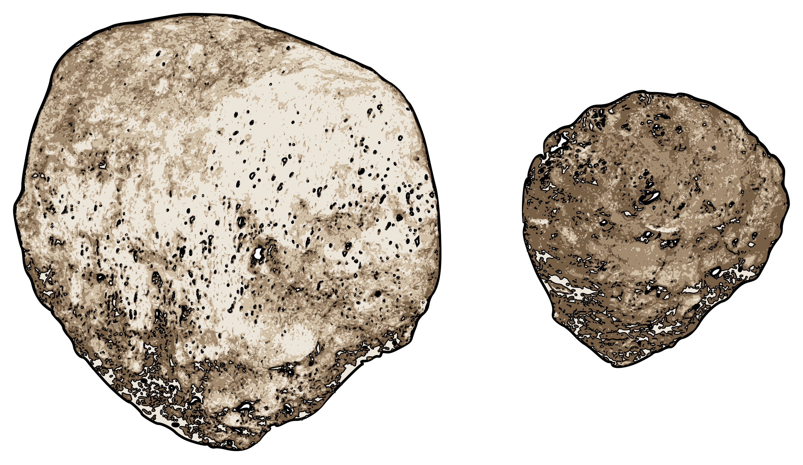
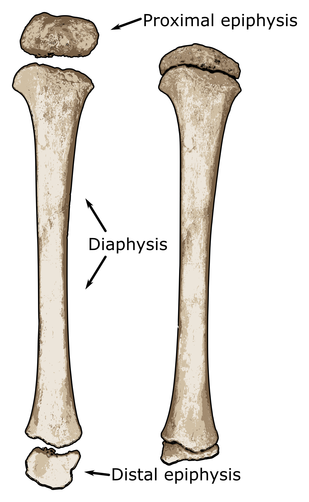
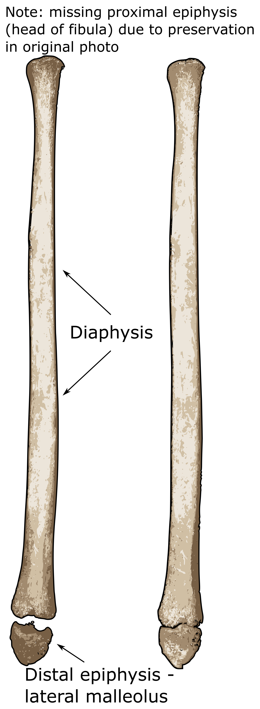
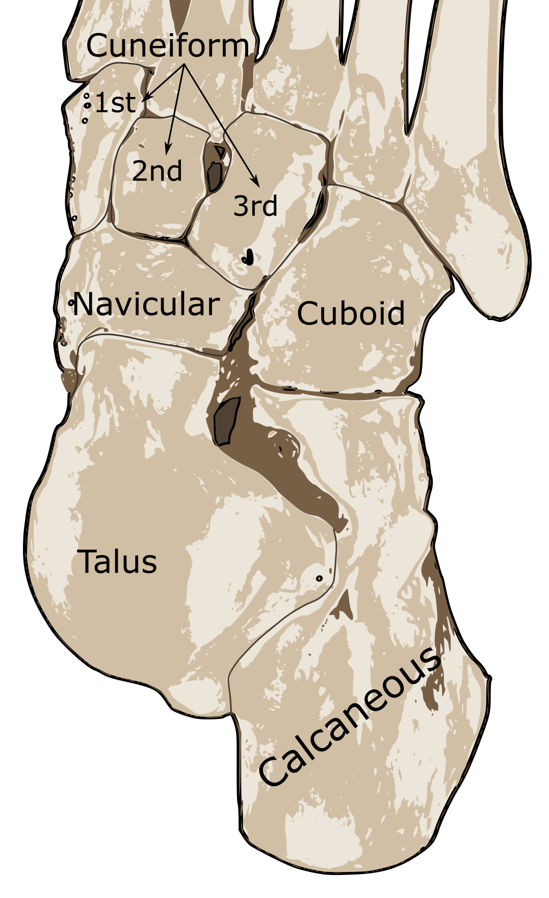
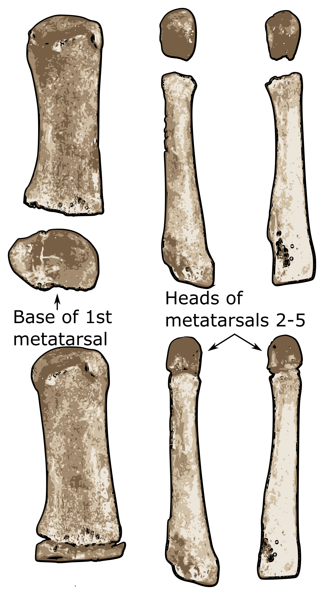
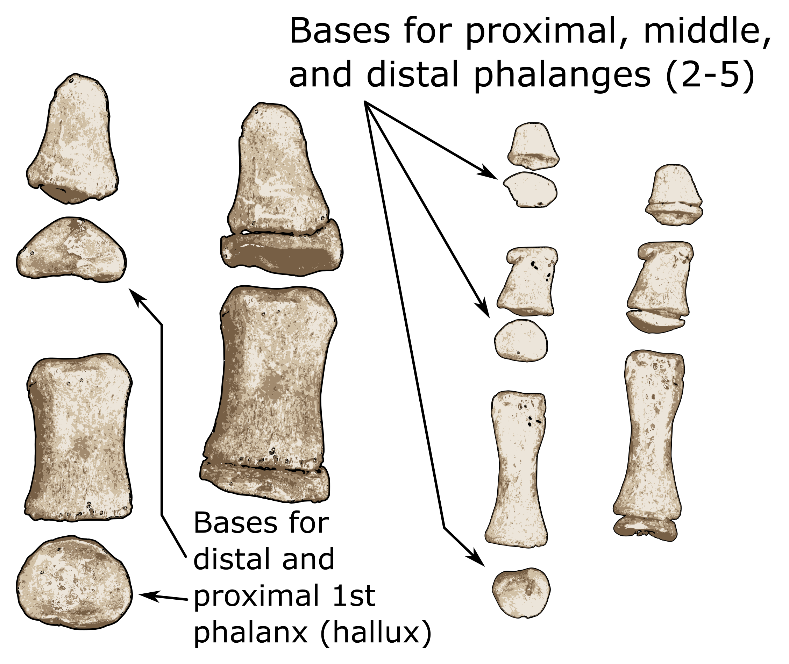

Patellae from an older child (left) and one from a younger child (right).
Patella
Since the patella has no separate ossification centers that fuse to it, it’s best to look at the overall morphology. The patella appears between 1½ and 3½ years. By 4-5 years old, it is still very coarse and tough, but it does begin to take shape. By puberty, it has essentially taken on its adult form (Prakash et al. 1979).
Patella Presentation
Estimated Age Range:

Juvenile tibia showing unfused proximal and distal epiphyses.
Tibia
Similar to the femur, the tibia may be represented by two ossification centers at birth: the diaphysis and the proximal epiphysis. If not present at birth, they usually appear within the next few weeks (Scheuer and Black 2004).
Within the next/first 10 months of life, the secondary centers for the distal epiphyses begin to ossify and between 3 and 5 years, and the medial malleolus commences ossification. The distal epiphyses start fusing to the diaphysis between 14-16 years (females) and 15-18 years (males) (Love et al. 1990).
Fusion of the proximal epiphysis comes a little bit later in most cases, between 13 and 17 years old in females and 15 and 19 in males.
Proximal epiphysis
Estimated Age Range:
Distal epiphysis
Estimated Age Range:

Juvenile fibula with the distal epiphysis. Note: proximal (head of the fibula) epiphysis is absent due to preservation of the remains.
Fibula
Compared to other bones, the commencement, timing, and order of ossification centers for the fibula is comparatively normal. At birth, the individual is only represented by the diaphysis and no epiphyses, unlike it is with the femur and the tibia (Scranton et al. 1976).
Between 10 and 22 months, the distal epiphysis begins its ossification process. During the 4th and 5th years, the proximal ossification centers begin ossification (Love et al. 1990). Like with many other bones, it appears that females grow and develop their skeletal system much more quickly than males. The distal epiphysis fuses between 12 and 15 years (in females) and 15-18 in males (Scheuer and Black 2014).
Lastly, the proximal epiphysis fuses to the fibula, making up the ‘head of the fibula’. In females, this occurs between 12 and 17 years while for males, it fuses between 15 and 20 years on average.
Proximal epiphysis - head
Estimated Age Range:
Distal epiphysis - lateral malleolus
Estimated Age Range:

Feet
Tarsals
Like the carpals in the wrists, tarsals in the ankle make up an incredibly complex joint. To accompany that complex joint is the complicated way that the bones ossified. Similar to the way that the carpals are dealt with on this site, only the appearance of tarsals will be mentioned due to their complex timetable (Cardoso 2010). (Note: the absence of one tarsal does not mean that the particular tarsal was never ossified, but that it may be lost or degraded due to poor preservation.)
Presence of tarsals:
Estimated Age Range:

The bones on the left show the first metatarsal and is base epiphysis while the skinnier and longer bones on the right represent metatarsals 2-5 and their head epiphyses.
Metatarsals
Like in the metacarpals in the hand, ossification for the metatarsals on digits 2-5 is different than for the first metacarpal. All metatarsal bodies are present at birth, however the base of the first metatarsal doesn’t appear until the individual is 2-3 years old, with fusion not complete until 13-15 years (female) or 16-18 years (male) (Davies et al. 2013).
For the metatarsals of digits 2-5, the epiphyseal heads don’t appear until 2-3 years of age similar to the base of the first metatarsal. The heads fuse to the rest of the metatarsals somewhat earlier than does the base of the first phalanx though. Fusion appears to be regulated to some extent by the individual’s sex, but fusion times occur around 11-13 years old for females, and 14-16 for males (Scheuer and Black 2004).
Fusion of base to 1st metatarsal:
Estimated Age Range:
Fusion of heads to metatarsals 2-5
Estimated Age Range:

The bones on the left show the proximal and distal pedal phalanges and their base epiphyses while the bones on the right represent the proximal, middle, and distal pedal phalanges (2-5) and their base epiphyses.
Pedal phalanges
The appearance and fusion of pedal phalanges is very similar to manual phalanges. All of the phalanges are present at birth, but have somewhat different appearance and fusion times.
Bases for the proximal phalanges appear around age 1-2 years old and fuse between 13 and 15 years old (females) and 16-18 years old (males). The appearance of epiphyseal bases for the middle and distal phalanges are only slightly different. Middle phalangeal bases start to ossify around 1-2 years while bases for distal phalanges ossify around 2-3 years (Schuler-Ellis and Lazar 1984).
However, fusion times of the bases to both the middle and distal phalanges take place around the same time: 11-13 years for females and 14-16 for males.
Fusion of bases to proximal phalanges
Estimated Age Range:
Fusion of bases to intermediate and distal phalanges
Estimated Age Range:
Jump to a region